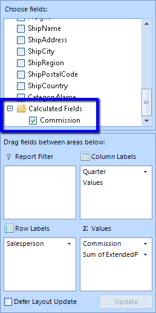

Calculated fields
In this article you will find out how to extend RadPivotGrid's generated report by adding Calculated Fields.
Calculated Fields Description
If your data analysis requires results that are not available using just the data source fields and RadPivotGrid's built-in calculations,
you can insert a calculated field that uses a custom formula to derive the results you need. A calculated field is a new data field in which
the values are the result of a custom calculation formula. You can display the calculated field along with another data field or on its own.
A calculated field is really a custom summary calculation, so in almost all cases, the calculated field references one or more fields in the
source data.
Calculated Fields Description
All Calculated Fields that you have added to your LocalDataSourceProvider will be visible in
RadPivotFieldList, so the user will be able to add and remove them at runtime. In order to
add a calculated field to LocalDataSourceProvider you have to add it to its
CalculatedFields collection. So first you have to create a concrete class that implements the abstract class
CalculatedField. This requires the implementation of two methods - CalculatedValue
and RequiredFields. CalculateValue__is the method in which you have
to define your calculation formula and create a new __AggregateValue__that will be shown in
__RadPivotGrid. In common scenario a Calculated Field reference one or more fields in the data source.
The RequiredFields__method should return __IEnumerable of the required fields.
That's why we have added a new class called RequiredField. It's purpose is to describe a field,
required for a calculated field. RequiredField can be created for property from the data object or for
another calculated field. Name property of CalculatedField class identifies its unique name that will be shown in the UI.
The first task is to decide what the calculation formula that you want to use is. For example, you can show the commission
that will be paid to all salespeople. Commission will be paid only to those who have more sold for more than $15 000.
The price of the sold items is kept by the ExtendedPrice property from the source. So the new class will look like this:
__[C#] __
public class CommissionCalculatedField : CalculatedField
{
private RequiredField extendPriceField;
public CommissionCalculatedField()
{
this.Name = "Commission";
this.extendPriceField = RequiredField.ForProperty("ExtendedPrice");
}
protected override IEnumerable<RequiredField> RequiredFields()
{
yield return this.extendPriceField;
}
protected override AggregateValue CalculateValue(IAggregateValues aggregateValues)
{
var aggregateValue = aggregateValues.GetAggregateValue(this.extendPriceField);
if (aggregateValue.IsError())
{
return aggregateValue;
}
double extendedPrice = aggregateValue.ConvertOrDefault<double>();
if (extendedPrice > 15000)
{
return new DoubleAggregateValue(extendedPrice * 0.1);
}
return null;
}
}
__[VB.NET] __
Public Class CommissionCalculatedField
Inherits CalculatedField
Private extendPriceField As RequiredField
Public Sub New()
Me.Name = "Commission"
Me.extendPriceField = RequiredField.ForProperty("ExtendedPrice")
End Sub
Protected Overrides Function RequiredFields() As IEnumerable(Of RequiredField)
Return New List(Of RequiredField) From {extendPriceField}
End Function
Protected Overrides Function CalculateValue(aggregateValues As IAggregateValues) As AggregateValue
Dim aggregateValue = aggregateValues.GetAggregateValue(Me.extendPriceField)
If aggregateValue.IsError() Then
Return aggregateValue
End If
Dim extendedPrice As Double = aggregateValue.ConvertOrDefault(Of Double)()
If extendedPrice > 15000 Then
Return New DoubleAggregateValue(extendedPrice * 0.1)
End If
Return Nothing
End Function
End Class
'#End Region

Now it is time to add a new instance of this class to the CalculatedFields collection of LocalDataSourceProvider:
__[C#] __
using (radPivotGrid1.PivotGridElement.DeferRefresh())
{
CommissionCalculatedField calculatedField = new CommissionCalculatedField();
calculatedField.Name = "Commission";
((LocalDataSourceProvider)this.radPivotGrid1.DataProvider).CalculatedFields.Add(calculatedField);
}
__[VB.NET] __
Using radPivotGrid1.PivotGridElement.DeferRefresh()
Dim calculatedField As New CommissionCalculatedField()
calculatedField.Name = "Commission"
DirectCast(Me.radPivotGrid1.DataProvider, LocalDataSourceProvider).CalculatedFields.Add(calculatedField)
End Using
'#End Region
'#Region "AddCalculatedToAggregateDescriptions"
Dim calculatedAggregate As New CalculatedAggregateDescription()
calculatedAggregate.CalculatedFieldName = "Commission"
DirectCast(radPivotGrid1.DataProvider, LocalDataSourceProvider).AggregateDescriptions.Add(calculatedAggregate)
'#End Region
FillWithData()
End Sub
Private Sub FillWithData()
Me.radPivotGrid1.RowGroupDescriptions.Add(New PropertyGroupDescription() With { _
.PropertyName = "Salesperson" _
})
Me.radPivotGrid1.ColumnGroupDescriptions.Add(New DateTimeGroupDescription() With { _
.PropertyName = "OrderDate", _
.[Step] = DateTimeStep.Quarter _
})
Me.radPivotGrid1.AggregateDescriptions.Add(New PropertyAggregateDescription() With { _
.PropertyName = "ExtendedPrice", _
.AggregateFunction = AggregateFunctions.Sum _
})
provider.ItemsSource = Invoice.GetInvoices()
Me.radPivotGrid1.ErrorString = "Error"
End Sub
End Class
'#Region CalculatedFieldClass
Public Class CommissionCalculatedField
Inherits CalculatedField
Private extendPriceField As RequiredField
Public Sub New()
Me.Name = "Commission"
Me.extendPriceField = RequiredField.ForProperty("ExtendedPrice")
End Sub
Protected Overrides Function RequiredFields() As IEnumerable(Of RequiredField)
Return New List(Of RequiredField) From {extendPriceField}
End Function
Protected Overrides Function CalculateValue(aggregateValues As IAggregateValues) As AggregateValue
Dim aggregateValue = aggregateValues.GetAggregateValue(Me.extendPriceField)
If aggregateValue.IsError() Then
Return aggregateValue
End If
Dim extendedPrice As Double = aggregateValue.ConvertOrDefault(Of Double)()
If extendedPrice > 15000 Then
Return New DoubleAggregateValue(extendedPrice * 0.1)
End If
Return Nothing
End Function
End Class
'#End Region
If you add calculated fields in code behind, you have to set the ItemsSource of __LocalDataSourceProvider__after
you have added all calculated fields or to wrap the code between (including setting the __ItemsSource__)
__BeginInit() - EndInit()__methods (or inside __using DeferRefresh() { ... }__ section ).